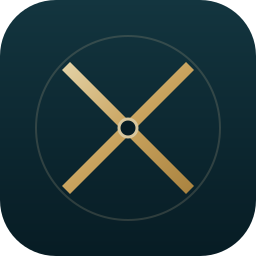
ליבה אחת שמנהלת את כל המערך הכירורגי, ומסביבה אפליקציות שמחברות את המטופל, את הקהילה, את הפתולוגיה ואת ההכשרה.
המידע קיים, אבל הוא מפוזר בין עשרה מקומות. ומה שנופל בין הכיסאות הוא בדיוק מה שהכי חשוב.
תוכנית שבועית, תורנויות, כוננויות וחדרי ניתוח נבנים ידנית, ומשתנים כל יום.
מה יש לי, מה התוכנית, מתי אשתחרר. שביעות רצון המטופלים נמדדת, מדורגת ומתוגמלת.
תשובת פתולוגיה שלא נמסרה, מכתב שלא הגיע לרופא המשפחה, מתמחה שלא נפגש עם החונך חודשיים.
הכוח הוא בזרימה: תוכנית ב־ORBIT עוברת לבנק, ניתוח ששובץ שולח למטופל הכנות, ניתוח שבוצע פותח מעקב פתולוגיה, ותשובה מגיעה לרופא המשפחה רק אחרי שיחה עם המטופל.
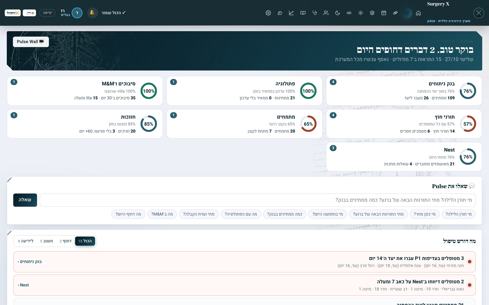
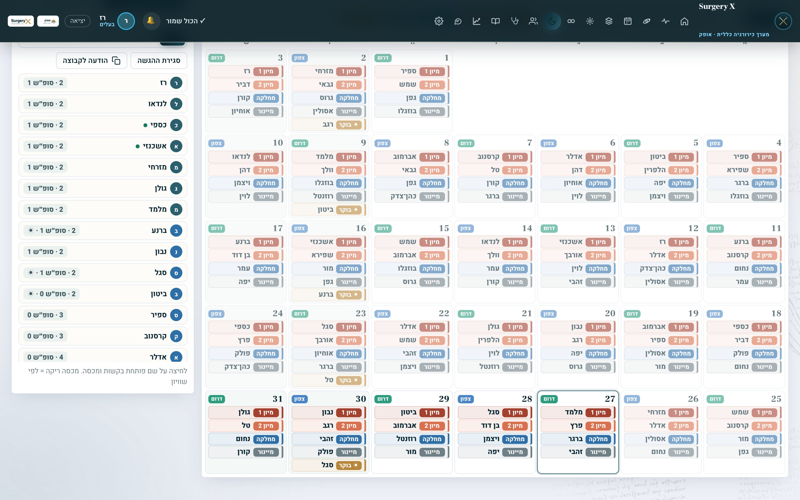
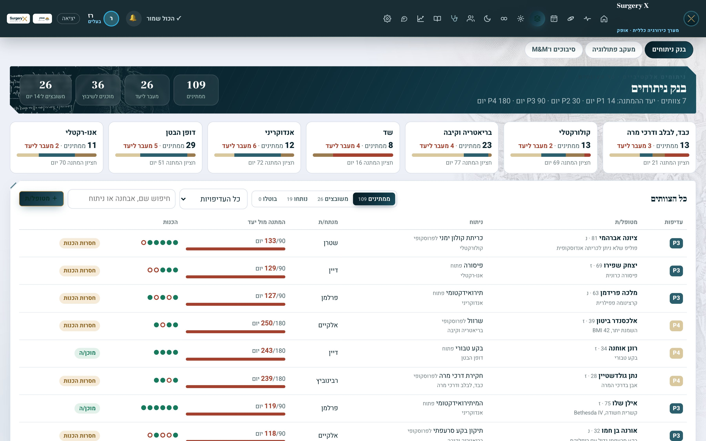
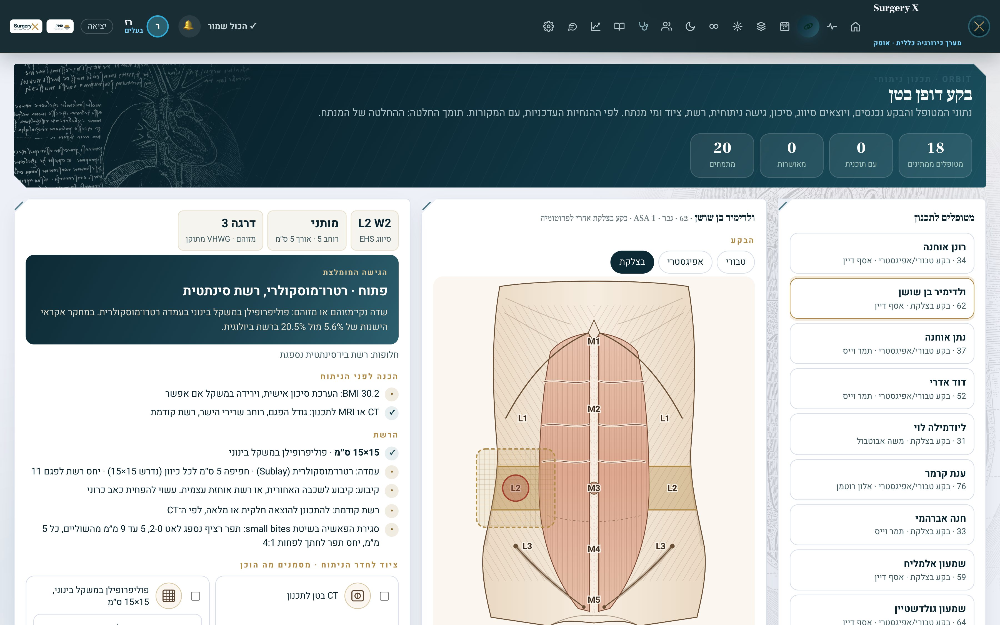
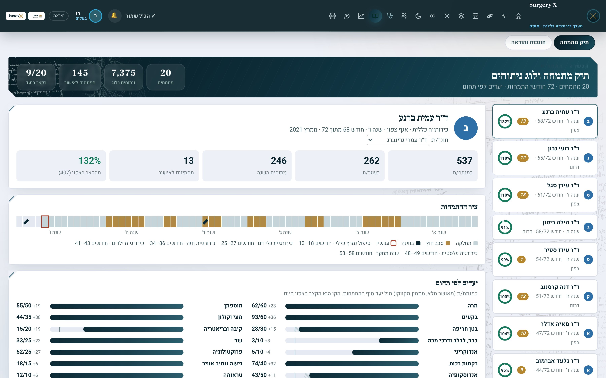
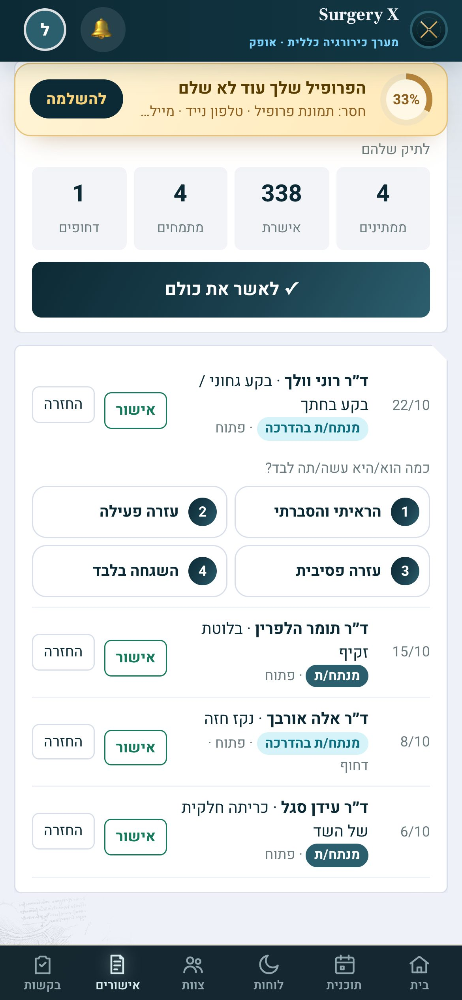
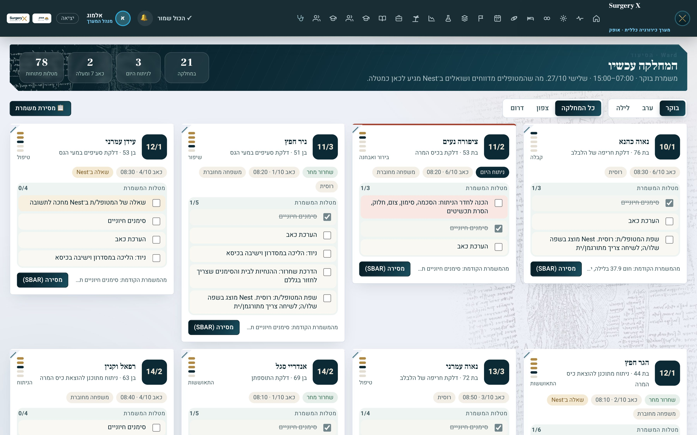
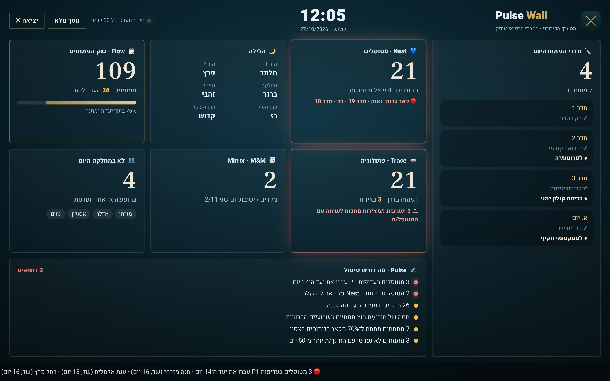
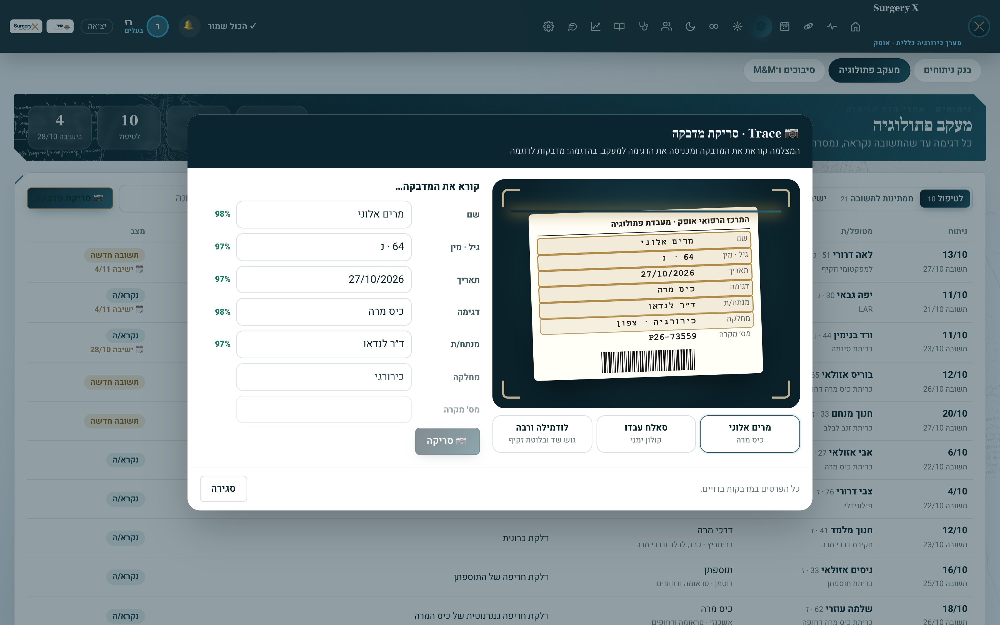
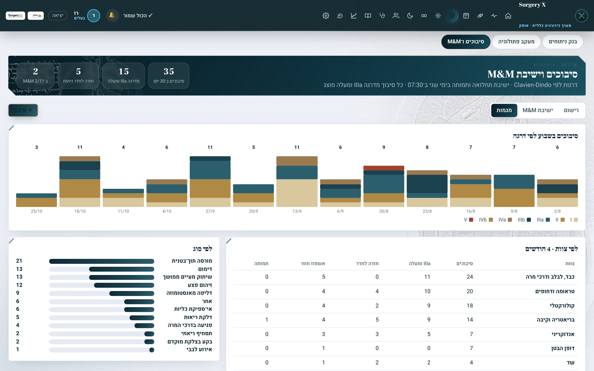
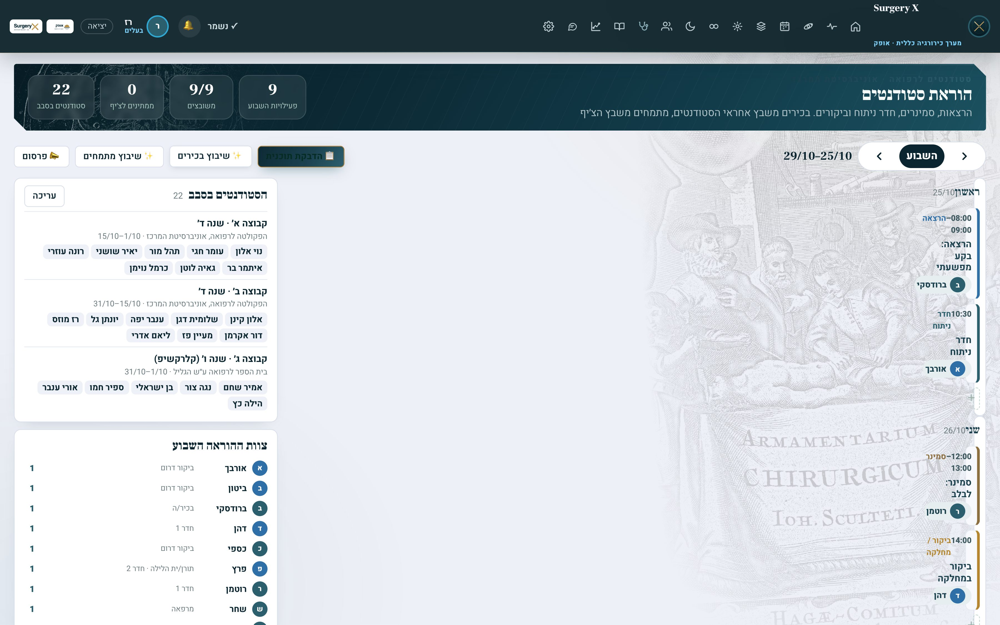
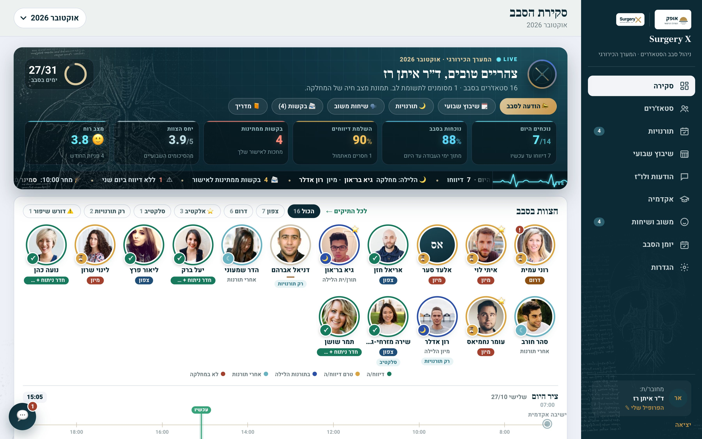
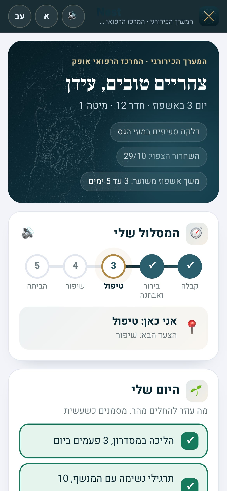
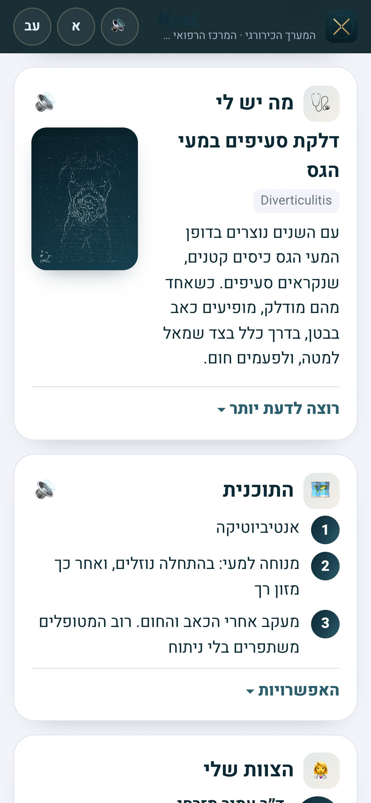
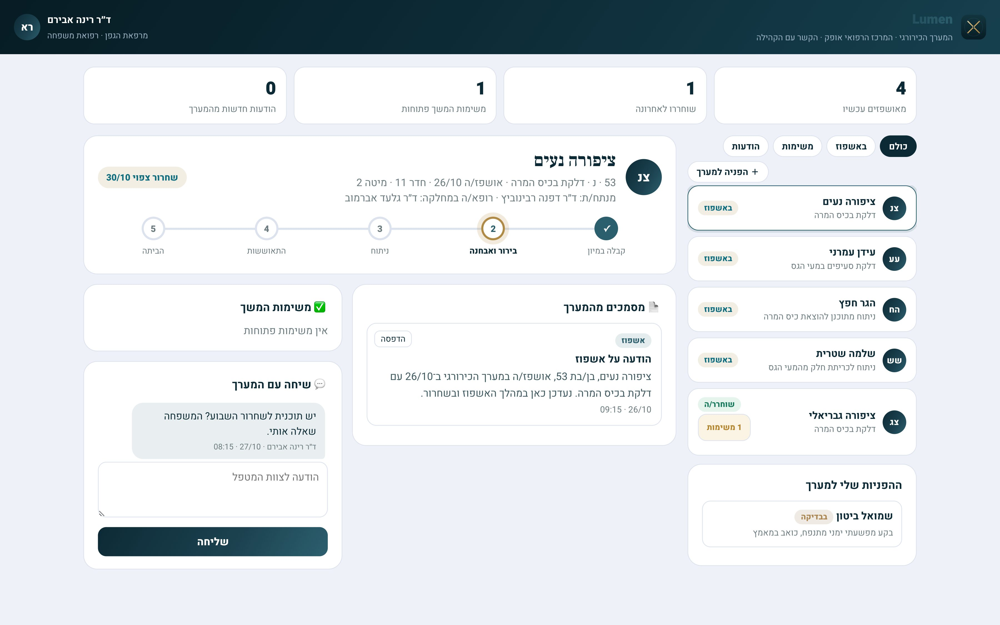
מתחילים בליבה במחלקה אחת, מוסיפים אפליקציות לפי הצורך ומתרחבים למחלקות ולבתי חולים נוספים.
| מי משלם | למה | מה מקבל |
|---|---|---|
| בתי חולים | שביעות רצון מטופלים ומדדי איכות נמדדים ומתוגמלים; זמן של צוות בכיר | Core · Pulse · ORBIT · Ward · Nest · Trace · Mirror |
| בתי חולים פרטיים | חוויית המטופל היא חלק מהמוצר | Nest · Flow · ORBIT |
| ארגוני בריאות עם קהילה | הרצף בין האשפוז לקהילה וחזרה | Lumen |
| תוכניות התמחות | תיעוד, עצמאות וחונכות לוועדות | Forge · Stage · Campus |
מגדירים מראש מה מודדים, ומציגים מספרים בסוף.
שאלון קצר לפני ואחרי, ושיעור המטופלים שפתחו את Nest.
שעות תכנון בשבוע, ושיחות טלפון שנחסכו.
תשובות פתולוגיה שנמסרו בזמן, ומכתבים שהגיעו לקהילה.
הדגמה חיה על מערך כירורגי בדוי. כל השמות והנתונים בהדגמה בדויים.